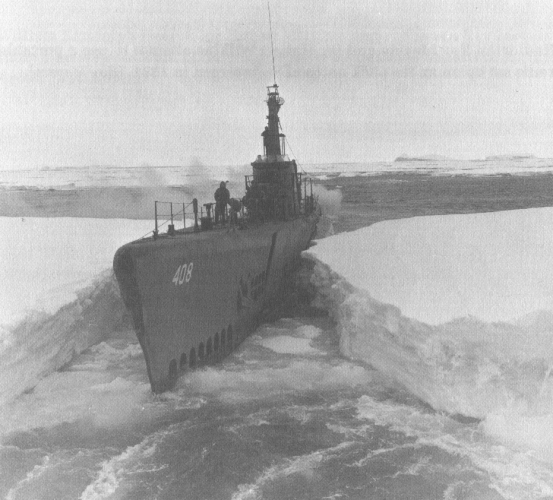

Avant la Seconde Guerre mondiale, l'Arctique était considéré comme un milieu très hostile, difficilement pénétrable et dépourvu de véritable signification stratégique, du moins du côté américain, bien qu'il ait été le théâtre de quelques opérations militaires dans des détroits. L'intérêt stratégique de ces régions s'est véritablement révélé après 1945, à la suite des progrès techniques de l'aviation et de la navigation sous-marine, deux modes qui levèrent les contraintes du déplacement dans les milieux polaires.
L’opération Highjump (OpHjp), officiellement dénommée The United States Navy Antarctic Developments Program, 1946-471, était une opération américaine organisée par l'amiral Richard Byrd en Antarctique et placée sous le commandement de Richard Cruzen. Elle fut lancée le 26 août 1946 et dura jusqu'en 1947. Cet impressionnant déploiement de forces fit appel à 5 000 hommes, 13 navires et 26 avions.
Au Canada, une installation radar longue portée s'élève dans la toundra à Hall Beach, au Nuvanut. Ce site est l'une des 50 stations de surveillance non gardées qui veillent sur la frontière nord de l'Amérique du Nord, qui s'étend de la côte Est canadienne jusqu'à la côte Ouest de l'Alaska. Cette ligne de radar, baptisée North Warning System (Système d'alerte du Nord), est gérée par l'armée américaine et canadienne dans le cadre du Commandement de la défense aérospatiale de l'Amérique du Nord (NORAD)
Au camp d'entraînement de l'Arctique situé à Hall Beach au Nuvanut, le caporal Stewart Hickman, de l'armée canadienne, surveille deux thermoplongeurs, utilisés pour faire fondre de la neige et de la glace et ainsi obtenir de l'eau. L'eau, essentielle pour la survie, peut être difficile à obtenir lors des opérations militaires qui ont lieu l'hiver. Afin de faire fondre la glace et la neige en continu, d'importantes quantités de combustible sont nécessaires.
u cours d'une mission d'entraînement à Hall Beach, au Nuvanut, des soldats canadiens débarquent d'un avion cargo militaire CC-117.
Un F-16 des United States Air Force est ravitaillé au-dessus de l'Alaska. L'avion de combat fait partie du 18th Aggressor Squadron, une unité qui joue le rôle d'un ennemi qui attaque lors des exercices d'entraînement au combat.
u cours d'un exercice réalisé dans la mer de Beaufort, le kiosque de l'U.S.S Connecticut, un sous-marin nucléaire d'attaque américain, fait surface à travers la glace et sert de plateforme flottante temporaire. Les États-Unis ne disposent pas de bases militaires au-delà du cercle Arctique en Alaska. Ils dépendent donc fortement des sous-marins et des avions pour patrouiller sur le territoire du nord.
Les broussailles, la couche épaisse de neige et le port d'un équipement inhabituel, composé de raquettes et de lourdes bottes surnommées « Bunny » (lapin en français), se liguent contre des soldats américains qui s'entraînent dans l'optique de combats dans l'Arctique au Northern Warfare Training Center.